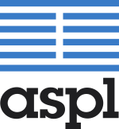

![[content begin]](images/content-begin.png) | ||||
Professional BEEP servicesAdvanced Software Production Line, S.L. provides professional services for jsVortex and other ASPL BEEP products, like Vortex Library or Turbulence. They are defined from basic external tech support to BEEP profiles development. What is included in the basic external tech support contract?Commercial support highlights are:
Why should I hire a Vortex Library support contract?jsVortex is an Open Source initiative created by ASPL. It is released under the LGPL license terms, allowing to develop Open Source as well as Commercial (closed source) projects. However, this does not ensure getting any tech support, patch resolution or similar services from ASPL. Anyway, limited support may be found through the Vortex Library community mailing list. To get priority and guarantee tech support to solve questions and fix found bugs while developing your project is only provided through a commercial contract. More informationIf you are interested in getting commercial tech support, please contact us at: info@aspl.es. Additional services
|
| More software | Linux servers | Hosting services |  |